Activity: Fill Pattern
This activity covers the steps to create a fill pattern feature. Examples of a rectangular, staggered and radial pattern are shown. The activity shows how to edit an existing fill pattern definition and also how to edit a pattern region profile.
Click here to download the activity file.
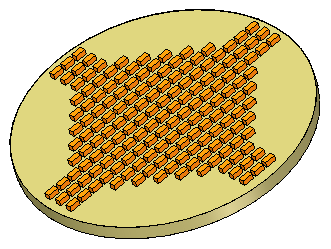
-
Open fill_pattern.par.
-
The feature that we want to pattern is detached. In PathFinder, right-click on the feature named rectangle and then choose the Attach command.
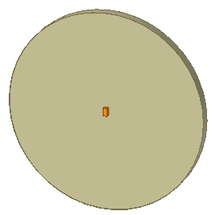
-
In PathFinder, click the box on the sketch named fill region.
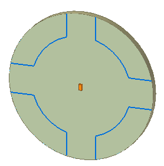
In PathFinder, select the feature named rectangle.
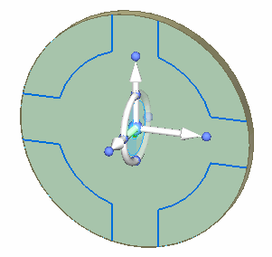
In the Pattern group, choose the Fill Pattern command.

Select the region shown.
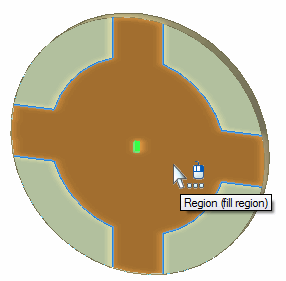
On the command bar, click Accept .
In both dynamic edit boxes, type 10 and then press Tab.
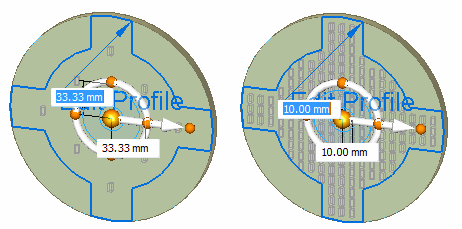
Notice that the primary axis on the steering wheel controls the first row direction. To change the direction of the first row, click the torus.
On the command bar, click Accept. Press Escape to end the command.
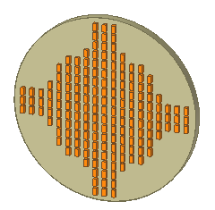
Change display to a front view.
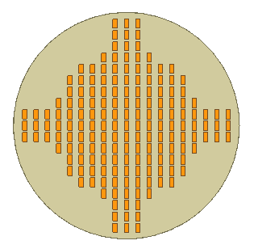
In PathFinder, select the pattern feature.
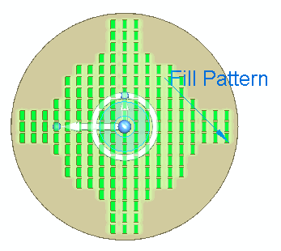
Click the Fill Pattern handle to edit the pattern definition.
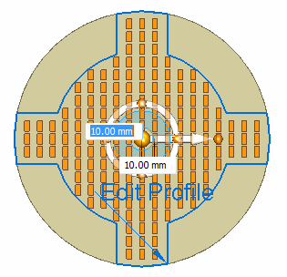
Notice that in some locations, the patterned feature comes very close to touching the pattern boundary. The patterned feature origin can lie on the boundary. A boundary tolerance can be applied to the pattern to control whether a patterned occurrence crosses or touches the boundary. Make all pattern occurrences lie inside the boundary.
The origin of the patterned feature is defined at the center of the rectangle.
On the command bar, click the Suppress Instance button
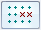
.In the dynamic edit box, type –5 and press Tab. This value offsets the boundary inward at a distance of 5. Notice that occurrences are now suppressed that touched or crossed the pattern boundary. The suppressed occurrences are denoted by a red circle.
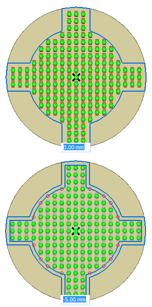
On the Suppress command bar, click the Accept button.
At this point, changes to any pattern definition can be made (for example: the row and column distances). Make no more changes. Click the Accept button.
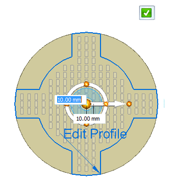
Press Escape to end the pattern edit.
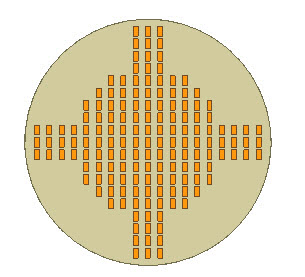
This completes the rectangular fill pattern portion of this activity.
Select the fill pattern feature in PathFinder.
Click the Fill Pattern text to edit the pattern. On the Fill Pattern command bar, click the Stagger fill pattern type.
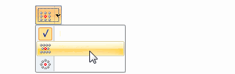
Notice that the occurrence vertical spacing value for a rectangular pattern is replaced with an angular value in a staggered pattern. The default Polar value of 60° produces a stagger on the second row equal to half of the first row spacing.
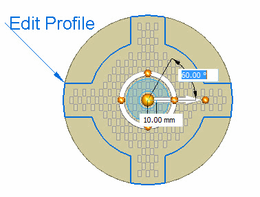
Click the Accept button.
Press Escape to end the pattern edit.
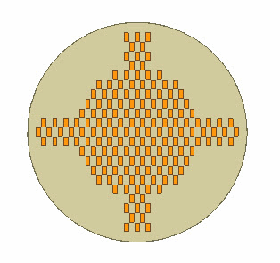
We will use a different parent feature to create a radial fill pattern. The feature is triangular shaped. Delete the fill pattern created in the previous steps.
In PathFinder, right-click on the feature named rectangle and then choose the Detach command.
The fill pattern region sketch was moved to the Used Sketches collector after it was used to create the previous fill pattern. To get the sketch back, right-click on the sketch and click Restore.
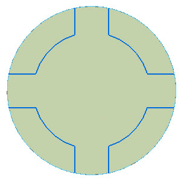
In PathFinder, right-click on the feature named triangle and then choose the Attach command.
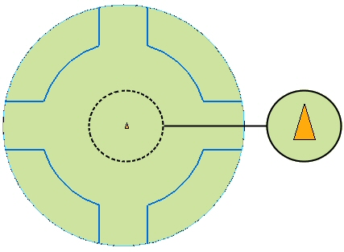
In PathFinder, select the feature named triangle.
Choose the Fill Pattern command.
On the command bar, click the Radial fill pattern type.
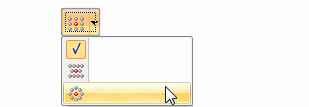
Select the same pattern region as used for the rectangular fill pattern and then click the Accept button.
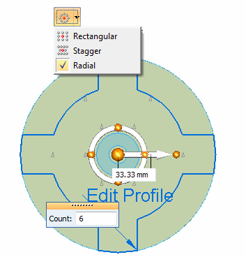
Notice that Instance Count is the default spacing.
Change the count to 16 and the spacing distance to 15.
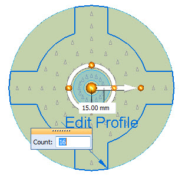
Click the Accept button and then press Escape.
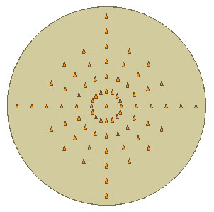
In PathFinder, select the fill pattern feature.
Click the Fill Pattern handle to edit the pattern definition.
Change the spacing to Target Spacing.
Edit the spacing as shown.
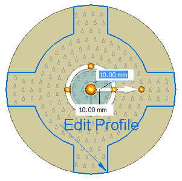
On the command bar, click the Suppress Instance button .
Edit the boundary offset to –5.
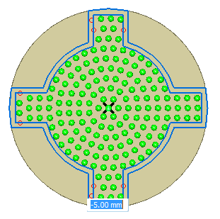
Accept the Suppress step. Accept the pattern edit. Press Escape to end the pattern edit.
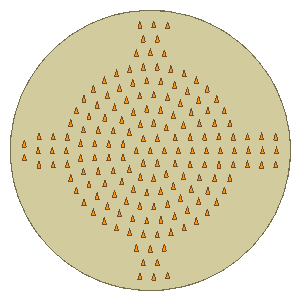
An option available only for a radial pattern fill is the Center Orient option. This option provides the control of the orientation of each occurrence in the pattern. Edit the radial pattern feature.
On the command bar, click the Center Orient option .
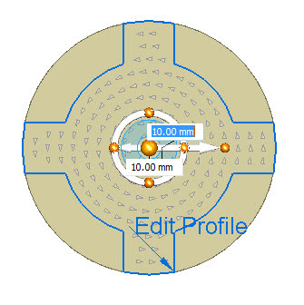
Notice all occurrences now have a new orientation.
The orientation is controlled by the steering wheel’s secondary axis (short arrow). The arrow points to the side of the parent feature which points to the center of the radial pattern. The following image shows the default orientation. In this example, the patterned arrows align in a counter-clock wise direction.
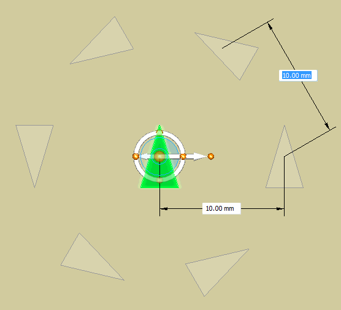
Click on the steering wheel’s torus sphere at the 6 o’clock position. All arrows point to the center.
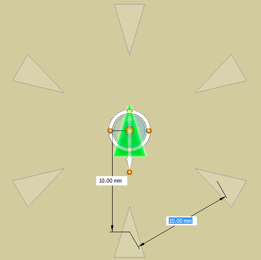
Change the orientation as shown. Click on the steering wheel’s torus sphere at the 12 o’clock position. All arrows should point away from the center.
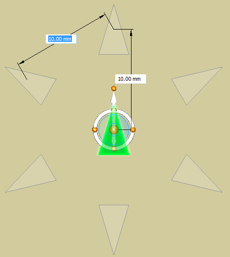
Accept the edit and end the edit pattern command.
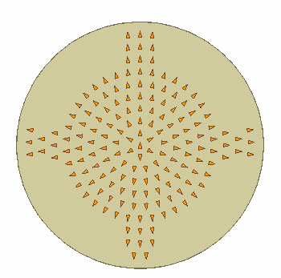
When a pattern fill is created, the boundaries are copied into the pattern definition. The original edges and sketch elements that define boundaries are not associative to the pattern boundaries. The original sketch is moved to the Used Sketches collector.
Edit the radial pattern feature. Click the Fill Pattern handle.
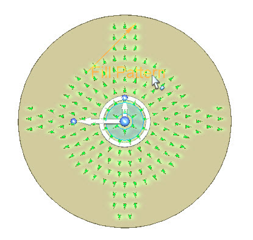
Click the Edit Profile handle.
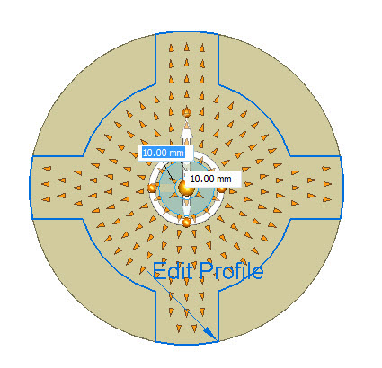
Edit the region profile as shown. When edit is complete, click the green check in the upper-right portion of the window.
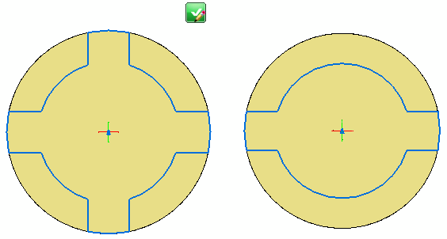
Hint: Use the Arc by 3 points command to place two new arcs. Use the Trim command to remove profile elements. Use the Connect relationship on the new arcs and the lines.
Click the Accept button and then press Escape.
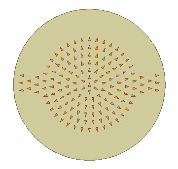
This concludes this activity. Close the file.
In this activity you learned how to create and edit a fill pattern. There are several options available to assist you in creating a desired fill pattern. Spend some time exploring these options to help master the use of the fill pattern command.
-
Click the Close button in the upper-right corner of this activity window.